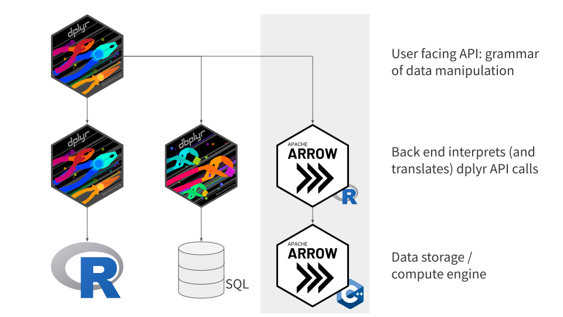
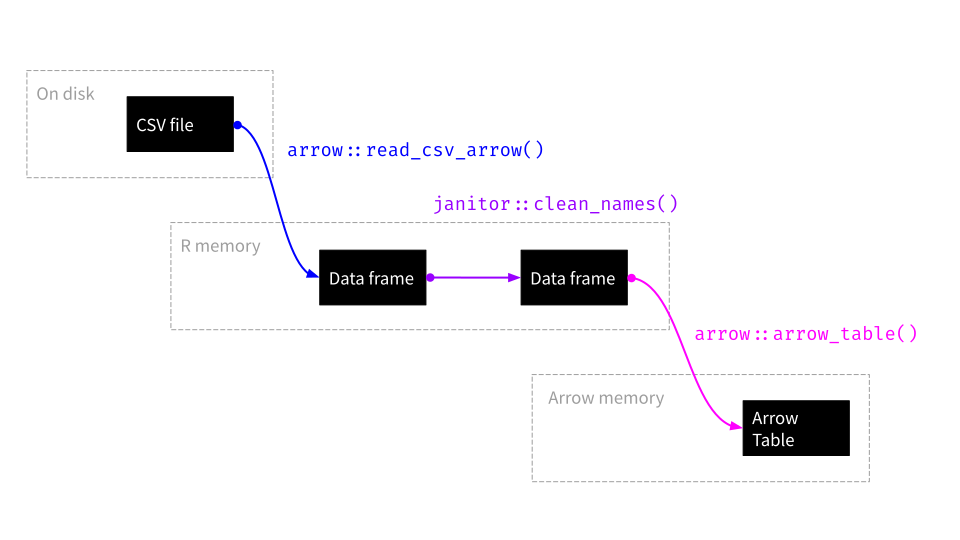
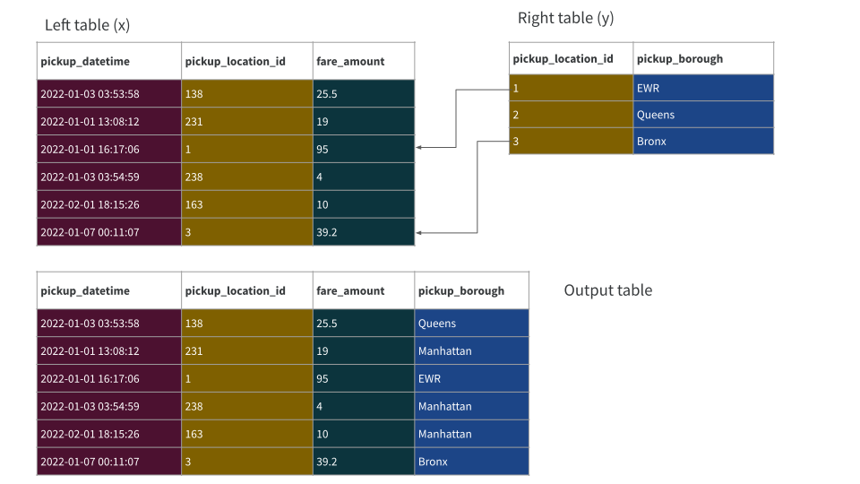

Part 2: Data Wrangling with Arrow
In this session we’ll explore the data manipulation capabilities of arrow in a little more detail. The back end that arrow supplies for dplyr has two main jobs: it provides a translation for the dplyr verbs themselves (e.g., mutate(), select(), filter()), and it translates the functions and expressions that are evaluated within those verbs (e.g., year == 2019). In terms of the diagrams we saw in the previous section, we’re focusing on the highlighted part of this dplyr schematic:

One-table computations
Let’s start by opening the nyc_taxi dataset:
nyc_taxi <- open_dataset("~/Datasets/nyc-taxi/")Example 1: Basic one-table verbs
In the Hello Arrow session we started with an example exercise demonstrating that arrow allows you to use the major one-table verbs in dplyr. To spare you the effort of looking back to the earlier section, here’s the query:
shared_rides <- nyc_taxi |>
filter(year %in% 2017:2021) |>
group_by(year) |>
summarize(
all_trips = n(),
shared_trips = sum(passenger_count > 1, na.rm = TRUE)
) |>
mutate(pct_shared = shared_trips / all_trips * 100) Here is what happens when we collect() that query:
tic()
collect(shared_rides)# A tibble: 5 × 4
year all_trips shared_trips pct_shared
<int> <int> <int> <dbl>
1 2017 113495512 32296166 28.5
2 2018 102797401 28796633 28.0
3 2019 84393604 23515989 27.9
4 2020 24647055 5837960 23.7
5 2021 30902618 7221844 23.4toc()3.205 sec elapsedNotice that almost all the basic one-table verbs appear in this example. The only one missing is arrange(), and if you did the exercises in the first session you’d have noticed that one of the problems requires you to use that one too. None of the computations are being done in R, but the arrow package provides the back end that translates the dplyr verbs and the expressions contained within to something that the Arrow C++ compute engine understands. It’s magical, but like any code-based magic it helps to recognize it is limited.
Example 2: Limitations
Here’s an example. Suppose I decide those large numbers are annoying and want to express the results of the shared rides computations in millions of rides. It’s easy enough to do this with a single mutate(). First I’ll define a convenient helper function that simply divides by 1 million:
millions <- function(x) x / 10^6Then I can apply it separately to both of the trips variables:
shared_rides |>
mutate(
all_trips = millions(all_trips),
shared_trips = millions(shared_trips)
) |>
collect()# A tibble: 5 × 4
year all_trips shared_trips pct_shared
<int> <dbl> <dbl> <dbl>
1 2017 113. 32.3 28.5
2 2018 103. 28.8 28.0
3 2019 84.4 23.5 27.9
4 2020 24.6 5.84 23.7
5 2021 30.9 7.22 23.4When there are only a few variables this is easy, but it does get a little cumbersome when there are many so we often use scoped verbs mutate_at() or (in more recent releases of dplyr) use across() to apply a function across a tidy selection of variables. However, at present arrow doesn’t know how to translate this part of the dplyr grammar so both of these fail:
shared_rides |>
mutate_at(c("all_trips", "shared_trips"), millions) |>
collect()Error in if (deparse(expr[[1]]) == name) {: the condition has length > 1shared_rides |>
mutate(across(ends_with("trips"), millions)) |>
collect()Error: Expression across(ends_with("trips"), millions) not supported in Arrow
Call collect() first to pull data into R.Besides resorting to the explicit mutate-each-variable-individually strategy, there are other workarounds. A common one is to recognize that most of the heavy lifting has already been completed in Arrow before ever needing to call across() (or a scoped verb). So it’s often possible to do all the hard work in Arrow, then collect() a small table into R, and then make use of the dplyr tools that weren’t accessible in Arrow. So, for example, both of these work:
shared_rides |>
collect() |>
mutate_at(c("all_trips", "shared_trips"), millions)# A tibble: 5 × 4
year all_trips shared_trips pct_shared
<int> <dbl> <dbl> <dbl>
1 2017 113. 32.3 28.5
2 2018 103. 28.8 28.0
3 2019 84.4 23.5 27.9
4 2020 24.6 5.84 23.7
5 2021 30.9 7.22 23.4shared_rides |>
collect() |>
mutate(across(ends_with("trips"), millions))# A tibble: 5 × 4
year all_trips shared_trips pct_shared
<int> <dbl> <dbl> <dbl>
1 2017 113. 32.3 28.5
2 2018 103. 28.8 28.0
3 2019 84.4 23.5 27.9
4 2020 24.6 5.84 23.7
5 2021 30.9 7.22 23.4The NYC taxi zones table
One limitation to the main table in the NYC Taxi data is that pickup and dropoff locations are encoded using a numeric location_id variable that doesn’t give any human-readable interpretation to the geographic regions. There is an auxiliary CSV table provided by NYC TLC that we can use for this purpose. It’s a small table so we don’t need Arrow: we can load the data into R as a tibble. We’ll use the read_csv_arrow() function from the arrow package for this purpose:
nyc_taxi_zones <- "data/taxi_zone_lookup.csv" |>
read_csv_arrow() |>
clean_names()
nyc_taxi_zones# A tibble: 265 × 4
location_id borough zone service_zone
<int> <chr> <chr> <chr>
1 1 EWR Newark Airport EWR
2 2 Queens Jamaica Bay Boro Zone
3 3 Bronx Allerton/Pelham Gardens Boro Zone
4 4 Manhattan Alphabet City Yellow Zone
5 5 Staten Island Arden Heights Boro Zone
6 6 Staten Island Arrochar/Fort Wadsworth Boro Zone
7 7 Queens Astoria Boro Zone
8 8 Queens Astoria Park Boro Zone
9 9 Queens Auburndale Boro Zone
10 10 Queens Baisley Park Boro Zone
# … with 255 more rowsThis is a handy little table: the numeric code in the location_id variable in this table uses the same coding scheme as the pickup_location_id and dropoff_location_id variables in the main NYC Taxi table. The borough column indicates which broad region in the city the zone belongs to (e.g., Manhattan, Queens, Brooklyn), and the zone column provides a human readable name for each taxi zone (e.g., the zone specified by location_id=4 refers to the Alphabet City district). Finally, there’s a service_zone column which isn’t very interesting for our purposes.
Okay, let’s move this into Arrow:
nyc_taxi_zones_arrow <- arrow_table(nyc_taxi_zones)
nyc_taxi_zones_arrowTable
265 rows x 4 columns
$location_id <int32>
$borough <string>
$zone <string>
$service_zone <string>To keep track of what just happened here, notice that we first read the data from disk into R memory, then cleaned the column names while still in R, and then created a copy of the data in Arrow memory:

It’s that last object (the one in Arrow) that we’re going to manipulate, though we’ll write our commands in R with the help of the arrow and dplyr packages.
Example 3: String manipulation
The nyc_taxi_zones_arrow table is a handy one to look at for two reasons. Firstly it’s small (unlike the main nyc_taxi table!), so you can work with it quickly and let yourself make mistakes without worrying too much about computational efficiency. Secondly, it has text fields that make it a handy way to demonstrate arrow support for regular expressions and string manipulations.
Here’s an example. Suppose I want to create an abbreviate the names of the taxi zones by removing vowels and spaces (e.g., "Jamaica Bay" becomes "JmcBy"), and remove anything following a slash (e.g., "West Chelsea/Hudson Yards" becomes "WstChls"). It’s not the best way of constructing abbreviations but it’ll do for illustrative purposes. For each of these abbreviations I want to calculate the string length, and then sort the results from longest to shortest. If I were writing this for an R data frame like nyc_taxi_zones, here’s the code I’d use:
nyc_taxi_zones |>
mutate(
abbr_zone = zone |>
str_remove_all("[aeiou' ]") |>
str_remove_all("/.*"),
abbr_zone_len = str_length(abbr_zone)
) |>
select(zone, abbr_zone, abbr_zone_len) |>
arrange(desc(abbr_zone_len))# A tibble: 265 × 3
zone abbr_zone abbr_zone_len
<chr> <chr> <int>
1 Prospect-Lefferts Gardens Prspct-LffrtsGrdns 18
2 Flushing Meadows-Corona Park FlshngMdws-CrnPrk 17
3 Springfield Gardens North SprngfldGrdnsNrth 17
4 Springfield Gardens South SprngfldGrdnsSth 16
5 Washington Heights North WshngtnHghtsNrth 16
6 Williamsburg (North Side) Wllmsbrg(NrthSd) 16
7 Financial District North FnnclDstrctNrth 15
8 Washington Heights South WshngtnHghtsSth 15
9 Williamsburg (South Side) Wllmsbrg(SthSd) 15
10 Financial District South FnnclDstrctSth 14
# … with 255 more rowsTo do the same thing for an Arrow Table like nyc_taxi_zones_arrow, I have to make a few modifications. First, as you’d expect given what we covered in the “Hello Arrow!” session, we need end the pipeline with a call to collect(). However I’ve had to modify it in a couple of other ways too:
nyc_taxi_zones_arrow |>
mutate(
abbr_zone = zone |>
str_replace_all("[aeiou' ]", "") |>
str_replace_all("/.*", "")
) |>
mutate(
abbr_zone_len = str_length(abbr_zone)
) |>
select(zone, abbr_zone, abbr_zone_len) |>
arrange(desc(abbr_zone_len)) |>
collect()# A tibble: 265 × 3
zone abbr_zone abbr_zone_len
<chr> <chr> <int>
1 Prospect-Lefferts Gardens Prspct-LffrtsGrdns 18
2 Flushing Meadows-Corona Park FlshngMdws-CrnPrk 17
3 Springfield Gardens North SprngfldGrdnsNrth 17
4 Springfield Gardens South SprngfldGrdnsSth 16
5 Washington Heights North WshngtnHghtsNrth 16
6 Williamsburg (North Side) Wllmsbrg(NrthSd) 16
7 Financial District North FnnclDstrctNrth 15
8 Washington Heights South WshngtnHghtsSth 15
9 Williamsburg (South Side) Wllmsbrg(SthSd) 15
10 Financial District South FnnclDstrctSth 14
# … with 255 more rowsThese changes aren’t arbitrary. Translations are never perfect, and you can see hints of that in this example. The exercises below explore this!
Notice that there are two separate calls to
mutate(): the first one creates theabbr_zonecolumn from thezonecolumn, and the second one creates theabbr_zone_lencolumn from the newly-addedabbr_zonecolumn. Natively, it would be possible to collapse these into a singlemutate(). What happens when you try that here?The arrow back end understands many R expressions that are not part of dplyr. A lot of those are base R expressions (e.g., trigonometric functions, arithmetic operations, etc) but it also includes many commonly used functions from other packages like stringr and lubridate. This example used
str_replace_all()from the stringr package, but if you look closely at the code you might wonder why I didn’t usestr_remove_all()instead. Try it and find out why.In the main example I read the data into R before moving it to Arrow. The
read_csv_arrow()function allows you to read the data directly from a CSV file to an Arrow table, by settingas_data_frame = FALSE. See if you can recreate the entire pipeline without ever loading the data into an R data frame. Hint: you may need to usedplyr::rename()instead ofjanitor::clean_names().
nyc_taxi_zones_arrow |>
mutate(
abbr_zone = zone |>
str_replace_all("[aeiou' ]", "") |>
str_replace_all("/.*", ""),
abbr_zone_len = str_length(abbr_zone)
) |>
select(zone, abbr_zone, abbr_zone_len) |>
arrange(desc(abbr_zone_len)) |>
collect()# A tibble: 265 × 3
zone abbr_zone abbr_zone_len
<chr> <chr> <int>
1 Prospect-Lefferts Gardens Prspct-LffrtsGrdns 18
2 Flushing Meadows-Corona Park FlshngMdws-CrnPrk 17
3 Springfield Gardens North SprngfldGrdnsNrth 17
4 Springfield Gardens South SprngfldGrdnsSth 16
5 Washington Heights North WshngtnHghtsNrth 16
6 Williamsburg (North Side) Wllmsbrg(NrthSd) 16
7 Financial District North FnnclDstrctNrth 15
8 Washington Heights South WshngtnHghtsSth 15
9 Williamsburg (South Side) Wllmsbrg(SthSd) 15
10 Financial District South FnnclDstrctSth 14
# … with 255 more rowsnyc_taxi_zones_arrow |>
mutate(
abbr_zone = zone |>
str_remove_all("[aeiou' ]") |>
str_remove_all("/.*")
) |>
mutate(
abbr_zone_len = str_length(abbr_zone)
) |>
select(zone, abbr_zone, abbr_zone_len) |>
arrange(desc(abbr_zone_len)) |>
collect()Warning: Expression str_remove_all(str_remove_all(zone, "[aeiou' ]"), "/.*") not
supported in Arrow; pulling data into R# A tibble: 265 × 3
zone abbr_zone abbr_zone_len
<chr> <chr> <int>
1 Prospect-Lefferts Gardens Prspct-LffrtsGrdns 18
2 Flushing Meadows-Corona Park FlshngMdws-CrnPrk 17
3 Springfield Gardens North SprngfldGrdnsNrth 17
4 Springfield Gardens South SprngfldGrdnsSth 16
5 Washington Heights North WshngtnHghtsNrth 16
6 Williamsburg (North Side) Wllmsbrg(NrthSd) 16
7 Financial District North FnnclDstrctNrth 15
8 Washington Heights South WshngtnHghtsSth 15
9 Williamsburg (South Side) Wllmsbrg(SthSd) 15
10 Financial District South FnnclDstrctSth 14
# … with 255 more rows"data/taxi_zone_lookup.csv" |>
read_csv_arrow(as_data_frame = FALSE) |>
rename(
location_id = LocationID,
borough = Borough,
zone = Zone,
service_zone = service_zone
) |>
mutate(
abbr_zone = zone |>
str_replace_all("[aeiou' ]", "") |>
str_replace_all("/.*", "")
) |>
mutate(
abbr_zone_len = str_length(abbr_zone)
) |>
select(zone, abbr_zone, abbr_zone_len) |>
arrange(desc(abbr_zone_len)) |>
collect()# A tibble: 265 × 3
zone abbr_zone abbr_zone_len
<chr> <chr> <int>
1 Prospect-Lefferts Gardens Prspct-LffrtsGrdns 18
2 Flushing Meadows-Corona Park FlshngMdws-CrnPrk 17
3 Springfield Gardens North SprngfldGrdnsNrth 17
4 Springfield Gardens South SprngfldGrdnsSth 16
5 Washington Heights North WshngtnHghtsNrth 16
6 Williamsburg (North Side) Wllmsbrg(NrthSd) 16
7 Financial District North FnnclDstrctNrth 15
8 Washington Heights South WshngtnHghtsSth 15
9 Williamsburg (South Side) Wllmsbrg(SthSd) 15
10 Financial District South FnnclDstrctSth 14
# … with 255 more rowsHere’s a depiction of where the data goes in this pipeline:

The only time that any part of the data set (other than metadata) arrives in R is at the very end, where the final result (containing only 265 rows and 3 columns) is pulled into R using collect().
The exercises in the previous section show cases when arrow encounters an R expression that it doesn’t know how to translate for the Arrow C++ compute engine to handle. When this occurs, one of two things will happen. If the input object was an in-memory Arrow Table (e.g., nyc_taxi_zones_arrow), it throws a warning, pulls the data back into R, and attempts to complete execution. However, if the input object is an on-disk/load-as-needed Arrow Dataset (e.g., nyc_taxi), the behaviour is more conservative: arrow immediately throws an error.
Example 4: Date/time support
The previous example helps give you a sense of where things stand with string manipulation in arrow: most core operations are supported, but you’ll find cases where some of the convenience functions are missing.
The current situation (in Arrow 8.0.0) with date/time operations is a little more patchy. Arrow comes with a variety of data types that are well suited to representing dates and times, but the compute engine doesn’t support the full scope of what you can do with a package like lubridate. For example, extractor functions such as year(), month(), day(), and wday() are all available:
nyc_taxi |>
filter(
year == 2022,
month == 1
) |>
mutate(
day = day(pickup_datetime),
weekday = wday(pickup_datetime, label = TRUE),
hour = hour(pickup_datetime),
minute = minute(pickup_datetime),
second = second(pickup_datetime)
) |>
filter(
hour == 3,
minute == 14,
second == 15
) |>
select(
pickup_datetime, year, month, day, weekday
) |>
collect()# A tibble: 5 × 5
pickup_datetime year month day weekday
<dttm> <int> <int> <int> <chr>
1 2022-01-01 14:14:15 2022 1 1 Sat
2 2022-01-01 14:14:15 2022 1 1 Sat
3 2022-01-01 14:14:15 2022 1 1 Sat
4 2022-01-09 14:14:15 2022 1 9 Sun
5 2022-01-18 14:14:15 2022 1 18 Tue Notice the output here is tricky with regard to the hours. The data are in nyc_taxi are stored in UTC, and hours() extracts the hours component of that UTC time. However, I am currently in Sydney. My local time is set to UTC+11, and the print method for the collected R object shows the output in my local time. This is not ideal, but it’s not a failure of arrow per se, just a really annoying mismatch of conventions.
I’m loathe to say much more about date/time support in arrow because this is a rapidly moving target. For example, right now arrow does not understand the temporal rounding functions round_date(), floor_date(), and ceil_date(), but the sole reason for that is – literally – that I am writing this workshop rather than finishing the pull request that will add this functionality!
Two-table computations
Example 5: Basic joins
I’ll use the penguins data from the palmerpenguins package for this example. You don’t actually need to know anything about the data set but in case you don’t know it or need a reminder, here it is:
penguins# A tibble: 344 × 8
species island bill_length_mm bill_depth_mm flipper_length_mm body_mass_g
<fct> <fct> <dbl> <dbl> <int> <int>
1 Adelie Torgersen 39.1 18.7 181 3750
2 Adelie Torgersen 39.5 17.4 186 3800
3 Adelie Torgersen 40.3 18 195 3250
4 Adelie Torgersen NA NA NA NA
5 Adelie Torgersen 36.7 19.3 193 3450
6 Adelie Torgersen 39.3 20.6 190 3650
7 Adelie Torgersen 38.9 17.8 181 3625
8 Adelie Torgersen 39.2 19.6 195 4675
9 Adelie Torgersen 34.1 18.1 193 3475
10 Adelie Torgersen 42 20.2 190 4250
# … with 334 more rows, and 2 more variables: sex <fct>, year <int>The penguins data set tells you the name of the island but doesn’t include any spatial information about where these islands are. So we could imagine having a small lookup table called location that contains an approximate longitude and latitude for each island (we’re being lazy and representing each island as an idealized point!)
location <- arrow_table(
island = c("Torgersen", "Biscoe", "Dream"),
lon = c(-64.77, -65.43, -64.73),
lat = c(-64.08, -65.50, -64.23)
)
locationTable
3 rows x 3 columns
$island <string>
$lon <double>
$lat <double>I’ve used arrow_table() to create this lookup table directly in Arrow because in a moment I’m going to want to send the penguins data over to Arrow also, and then left join the location table onto the penguins table so that we now have columns for lon and lat. I imagine everyone taking this workshop is familiar with data base joins and with the dplyr syntax for performing them, but let’s make this super easy and include a pretty picture illustrating what left_join() is going to do for us:

Of course the real penguins data frame has more rows and columns than the ones shown, but that’s not really the point!
So let’s do this. Our initial dplyr pipe looks like this: we convert penguins to an Arrow Table using the very evocatively named arrow_table() function, and then left_join() that table with the location table (which is already in Arrow):
penguins |>
arrow_table() |>
left_join(location)Table (query)
species: dictionary<values=string, indices=int8>
island: dictionary<values=string, indices=int8>
bill_length_mm: double
bill_depth_mm: double
flipper_length_mm: int32
body_mass_g: int32
sex: dictionary<values=string, indices=int8>
year: int32
lon: double
lat: double
See $.data for the source Arrow objectThe result is an unevaluated query. If we want to execute this and then pull the results back into R we need to call collect() at the end of the pipeline. So we’ll do that, after using select() so that the columns returned just so happen to be the same ones shown in the pretty picture above:
penguins |>
arrow_table() |>
left_join(location) |>
select(species, island, bill_length_mm, lon, lat) |>
collect()# A tibble: 344 × 5
species island bill_length_mm lon lat
<fct> <fct> <dbl> <dbl> <dbl>
1 Adelie Torgersen 39.1 -64.8 -64.1
2 Adelie Torgersen 39.5 -64.8 -64.1
3 Adelie Torgersen 40.3 -64.8 -64.1
4 Adelie Torgersen NA -64.8 -64.1
5 Adelie Torgersen 36.7 -64.8 -64.1
6 Adelie Torgersen 39.3 -64.8 -64.1
7 Adelie Torgersen 38.9 -64.8 -64.1
8 Adelie Torgersen 39.2 -64.8 -64.1
9 Adelie Torgersen 34.1 -64.8 -64.1
10 Adelie Torgersen 42 -64.8 -64.1
# … with 334 more rowsThe example is very simple and only considers one type of join, but the point is simply to illustrate that joins are supported and the syntax is more or less what you’d expect.
Example 6: Traps for the unwary
Now let’s do something more a little more realistic using the nyc_taxi data, but in doing so we’re going to need to be very careful.
Let’s imagine that our task is to analyze the taxi data as a function of the pickup and dropoff boroughs. To start with we’ll keep things simple: we’ll ignore the dropoff location and focus only on the pickups. All we want to do is add a column to the nyc_taxi dataset named pickup_borough. We’ll go through this slowly. First, let’s create a version of the taxi zones data that contains appropriately named variables:
pickup <- nyc_taxi_zones |>
select(
pickup_location_id = location_id,
pickup_borough = borough
)
pickup# A tibble: 265 × 2
pickup_location_id pickup_borough
<int> <chr>
1 1 EWR
2 2 Queens
3 3 Bronx
4 4 Manhattan
5 5 Staten Island
6 6 Staten Island
7 7 Queens
8 8 Queens
9 9 Queens
10 10 Queens
# … with 255 more rowsOkay, so now we have (what appears to be) the perfect table to left join on. The nyc_taxi and pickup tables both have an integer-valued pickup_location_id column that we can use as the join key, and the pickup_borough column is named appropriately for insertion into nyc_taxi. Because the left_join() function in dplyr will automatically join on columns with the same name, the join command looks like this:
nyc_taxi |>
left_join(pickup)On the surface this query looks like it should work: we know that it’s well-formed dplyr code, and we know from the previous example that arrow supports database joins, so it should work, right? What we’re expecting to see is a left join exactly analogous to our penguins example:

Instead we get an error!
nyc_taxi |>
left_join(pickup) |>
collect()Error in `collect()`:
! Invalid: Incompatible data types for corresponding join field keys: FieldRef.Name(pickup_location_id) of type int64 and FieldRef.Name(pickup_location_id) of type int32If we dig into this error message it’s telling us that we’ve encountered a type mismatch. The nyc_taxi and pickup tables both contain a column named pickup_location_id, and so the left_join() function has attempted to join on that column. However, the two columns don’t store the same kind of data, so Arrow throws an error message. That might seem a little odd because they’re both storing integer values, and that’s the same type of data right?
Not necessarily. You’re probably going to encounter this in the wild so let’s unpack it now.
Schemas and data types
Arrow is quite picky about data types. In our previous example, both tables store the pickup_location_id variable as an integer, but they haven’t stored it as the same kind of integer: in the nyc_taxi data it’s encoded as a 64-bit integer, but in the pickup table it’s encoded as a 32-bit integer. Arrow won’t treat these as equivalent, so whenever you’re joining tables you need to pay close attention to data types. Later on in the workshop I’ll talk more about the various data types that exist in Arrow and R and how they’re translated, but for now it’s sufficient to recognise that a 32-bit integer is not the same thing as a 64-bit integer.
So how do we diagnose this issue, and how do we fix it?
Back at the start of the workshop when we first opened the dataset, we saw some output listing all the variables contained in the data and their types. The formal name for this in Arrow is the schema of the data set, and we can check the schema explicitly like this:
nyc_taxi$schemaSchema
vendor_name: string
pickup_datetime: timestamp[ms]
dropoff_datetime: timestamp[ms]
passenger_count: int64
trip_distance: double
pickup_longitude: double
pickup_latitude: double
rate_code: string
store_and_fwd: string
dropoff_longitude: double
dropoff_latitude: double
payment_type: string
fare_amount: double
extra: double
mta_tax: double
tip_amount: double
tolls_amount: double
total_amount: double
improvement_surcharge: double
congestion_surcharge: double
pickup_location_id: int64
dropoff_location_id: int64
year: int32
month: int32Near the bottom of that list you can see that the entry for pickup_location_id is int64.
Okay, now think about what happens when we try to join on the pickup data. The pickup data is currently an R data frame but when the join takes place it gets implicitly converted to an Arrow table, and this implicit conversion relies on some default assumptions about what kind of data types should be created in Arrow. So let’s have a look at the schema for the object that gets created:
arrow_table(pickup)$schemaSchema
pickup_location_id: int32
pickup_borough: stringThere’s our type mismatch. In the schema for this table, pickup_location_id is int32.
So how do we fix it? There are several ways you can do this, but the simplest is probably to explicitly define the schema for the auxiliary table. Let’s move the nyc_taxi_zones data from R to Arrow using the as_arrow_table() command:
nyc_taxi_zones <- nyc_taxi_zones |>
as_arrow_table(
schema = schema(
location_id = int64(),
borough = utf8(),
zone = utf8(),
service_zone = utf8()
)
)
nyc_taxi_zones$schemaSchema
location_id: int64
borough: string
zone: string
service_zone: stringNow that the location_id column in nyc_taxi_zones is an Arrow int64 type, our subsequent operations in defining a pickup table (as well as the dropoff table that I’m about to use) will inherit this property. The type mismatch problem will go way and we can now write a join that will “just work”.
Example 6 revisited: Fixing the join
Once we have a properly formatted auxiliary table, our task becomes much simpler. Let’s join twice, once to insert a pickup_borough column into the NYC Taxi data, and a second time to insert a dropoff_borough into the data. Once this is done we can compute cross-tabulations: for every combination of pickup and dropoff borough, how many rides are there that start and end in the respective regions of the city?
pickup <- nyc_taxi_zones |>
select(
pickup_location_id = location_id,
pickup_borough = borough
)
dropoff <- nyc_taxi_zones |>
select(
dropoff_location_id = location_id,
dropoff_borough = borough
)
tic()
borough_counts <- nyc_taxi |>
left_join(pickup) |>
left_join(dropoff) |>
count(pickup_borough, dropoff_borough) |>
arrange(desc(n)) |>
collect()
toc()525.445 sec elapsedBe warned! Although the code is clean and it all works nicely, this query does take a little while to complete. Still, when you consider the fact that a humble 2022 Dell XPS13 laptop just joined twice onto a 1.7 billion row table and cross-tabulated by the newly-inserted columns, that’s not too shabby. Anyway, here’s the results:
borough_counts# A tibble: 50 × 3
pickup_borough dropoff_borough n
<chr> <chr> <int>
1 <NA> <NA> 1249152360
2 Manhattan Manhattan 355850092
3 Queens Manhattan 14648891
4 Manhattan Queens 13186443
5 Manhattan Brooklyn 11294128
6 Queens Queens 7537042
7 Unknown Unknown 4519763
8 Queens Brooklyn 3727686
9 Brooklyn Brooklyn 3566671
10 Manhattan Bronx 2091627
# … with 40 more rows- How many taxi pickups were recorded in 2019 from the three major airports covered by the NYC Taxis data set (JFK, LaGuardia, Newark)?
pickup_location <- nyc_taxi_zones |>
select(
pickup_location_id = location_id,
pickup_zone = zone
)
tic()
nyc_taxi |>
filter(year == 2019) |>
left_join(pickup_location) |>
filter(str_detect(pickup_zone, "Airport")) |>
count(pickup_zone) |>
collect()# A tibble: 3 × 2
pickup_zone n
<chr> <int>
1 LaGuardia Airport 2159224
2 JFK Airport 2729336
3 Newark Airport 8643toc()17.117 sec elapsedThe result here seemed slightly surprising to me initially (not being from the US, much less New York), but it makes a little more when you look at the geography: Newark airport is in New Jersey, and not strictly speaking a part of New York City. This has an impact on how the zones are categorized, what fees are charged, and (I presume) on whether the taxis that service the airport tend to be captured by the NYC TLC data. It’s not very relevant to our goals in this workshop but of course would be important in a real world data analysis :)
Combining arrow with duckdb
At the start of the workshop we emphasized the point that Arrow aims to be a multi-language toolbox that makes it easier to connect analytics applications. Here’s an example: DuckDB.
If you’re not familiar with it, DuckDB is a lightweight database system designed specifically for analytics. It’s serverless, has no external dependencies, and if you want to use it with R all you have to do is install the duckdb package with install.packages("duckdb"). Think of it as like SQLite, with a major exception: it’s intended to support analytics workflows (fewer queries, but computationally expensive ones) rather than transactional ones (many queries that touch only a small part of the database). For the kind of workflows a data scientist tends to engage in, it’s usually much faster than SQLite. Plus, it comes with Arrow support, and consequently the arrow and duckdb packages play very nicely together.
Here’s how it works: First, notice DuckDB is an SQL database, and you can interact with it from R using dbplyr. Second, notice that DuckDB understands Arrow formats, so we can pass control of a dataset from the Arrow C++ library to DuckDB simply by passing pointers: there’s no copying involved. These two things together are what allow the arrow package to supply two very handy functions, to_duckdb() and to_arrow(). What these do, in effect, is allow you to switch out one engine for the other in the middle of a data analysis pipeline at almost zero cost!

This can be remarkably powerful. There are some operations that are supported by DuckDB but not currently available in the Arrow compute engine, and vice versa. So it’s easy just flip back and forth between them whenever you need to.
(As an aside, if you’re like me this feels… wrong. Under normal circumstances you’d think it’s absurdly wasteful to completely swap out the back end engine just to get access to a couple of handy functions, but that’s because we’re all so used to a mental model in which serialization costs are pervasive. We’ve all internalized the idea that switching costs are really, really big. But in this case all we’re really doing is passing a little bit of metadata between two processes that both understand Arrow and dplyr so it’s really not a big deal)
Example 7: Window functions
Okay let’s start with a simple example that intuitively you’d think should work, and I’ll use the penguins data from the palmerpenguins package again. I’m going to add a column specifying the row number, filter out some observations, and select a few columns. Nothing fancy, and if I do it natively in R, everything works fine:
penguins |>
mutate(id = row_number()) |>
filter(is.na(sex)) |>
select(id, sex, species, island)# A tibble: 11 × 4
id sex species island
<int> <fct> <fct> <fct>
1 4 <NA> Adelie Torgersen
2 9 <NA> Adelie Torgersen
3 10 <NA> Adelie Torgersen
4 11 <NA> Adelie Torgersen
5 12 <NA> Adelie Torgersen
6 48 <NA> Adelie Dream
7 179 <NA> Gentoo Biscoe
8 219 <NA> Gentoo Biscoe
9 257 <NA> Gentoo Biscoe
10 269 <NA> Gentoo Biscoe
11 272 <NA> Gentoo Biscoe Okay let’s imagine I’m doing all this in Arrow. I’ll add an arrow_table() step at the top of the pipeline so that all the subsequent steps are being done using an Arrow table not an R data frame, and…
penguins |>
arrow_table() |>
mutate(id = row_number()) |> # oh no!
filter(is.na(sex)) |>
select(id, sex, species, island)Warning: Expression row_number() not supported in Arrow; pulling data into R…it doesn’t work. The row_number() function is not currently understood by the Arrow back end. In fact, this is a special case of a general issue: engine supplied by the Arrow C++ library doesn’t currently support window functions, and as a consequence the arrow R package can’t do much to help. However, the DuckDB engine does support window functions, so all we have to do is pass control over to_duckdb():
penguins |>
arrow_table() |>
to_duckdb() |>
mutate(id = row_number()) |>
filter(is.na(sex)) |>
select(id, sex, species, island)# Source: lazy query [?? x 4]
# Database: DuckDB 0.3.4 [danielle@Linux 5.13.0-51-generic:R 4.2.0/:memory:]
id sex species island
<dbl> <chr> <chr> <chr>
1 4 <NA> Adelie Torgersen
2 9 <NA> Adelie Torgersen
3 10 <NA> Adelie Torgersen
4 11 <NA> Adelie Torgersen
5 12 <NA> Adelie Torgersen
6 48 <NA> Adelie Dream
7 179 <NA> Gentoo Biscoe
8 219 <NA> Gentoo Biscoe
9 257 <NA> Gentoo Biscoe
10 269 <NA> Gentoo Biscoe
# … with more rowsIt all works now.
Example 8: Something bigger!
The example you’ve just seen highlights the basic idea but it’s tiny: a 344 row data set doesn’t really need Arrow at all. So let’s scale this up a little! Let’s suppose I’m working with the NYC taxi data for January 2022 and I’ve opened it as an Arrow dataset:
nyc_taxi_jan <- open_dataset("~/Datasets/nyc-taxi/year=2022/month=1/")It’s small relative to the full taxi data, but it’s still two and a half million rows. Large enough that to potentially cause headaches if we aren’t cautious:
nyc_taxi_jan$num_rows [1] 2463879Now let’s give ourselves a slightly weird “numerological” task: we want to rank the taxi rides in chronological order by pickup time. We then want to find those taxi rides where the pickup occurred on the 59th minute of the hour, and the 59th second of minute, and the numerical rank of that ride contains the number 59 in it. We would like to return the rank, the pickup time, and a “magic number” that removes all the digits from the rank that are not 5 or 9. This would be a little tricky with arrow and dplyr alone, but not too difficult with duckdb and dbplyr:
tic()
numerology <- nyc_taxi_jan |>
to_duckdb() |>
window_order(pickup_datetime) |>
mutate(trip_id = row_number()) |>
filter(
trip_id |> as.character() |> str_detect("59"),
second(pickup_datetime) == 59,
minute(pickup_datetime) == 59
) |>
mutate(
magic_number = trip_id |>
as.character() |>
str_remove_all("[^59]") |>
as.integer()
) |>
select(trip_id, magic_number, pickup_datetime) |>
collect()
toc()0.559 sec elapsednumerology# A tibble: 37 × 3
trip_id magic_number pickup_datetime
<dbl> <int> <dttm>
1 13159 59 2022-01-01 02:59:59
2 39159 959 2022-01-01 15:59:59
3 65940 59 2022-01-02 01:59:59
4 159315 595 2022-01-03 14:59:59
5 405954 595 2022-01-06 18:59:59
6 405955 5955 2022-01-06 18:59:59
7 487592 59 2022-01-07 21:59:59
8 590708 59 2022-01-09 07:59:59
9 590709 599 2022-01-09 07:59:59
10 590710 59 2022-01-09 07:59:59
# … with 27 more rowsIf you’re interested in following up on this topic, a good place to start is with the Bigger data with arrow and duckdb slides prepared by Thomas Mock and Edgar Ruiz